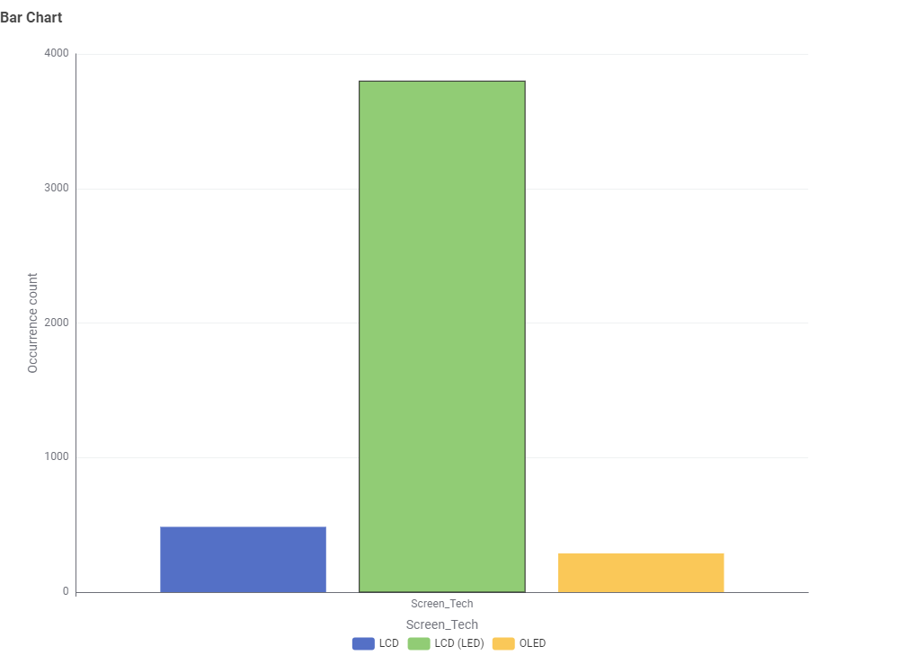
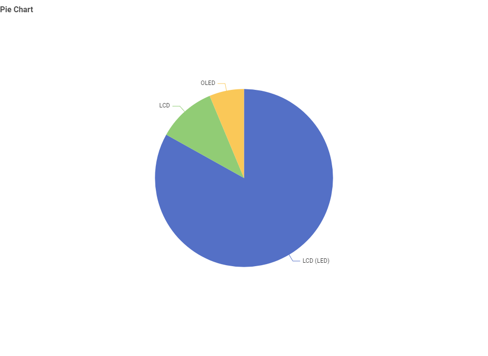
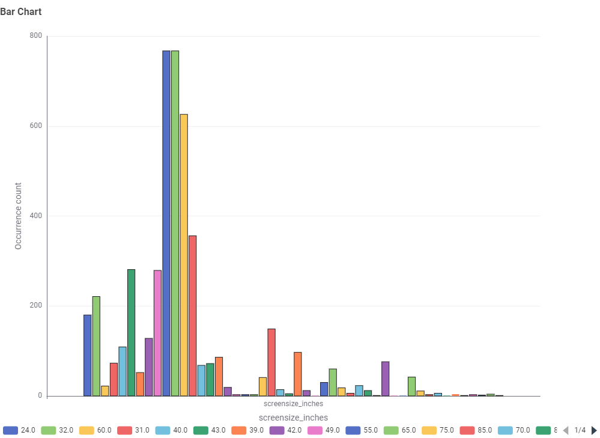
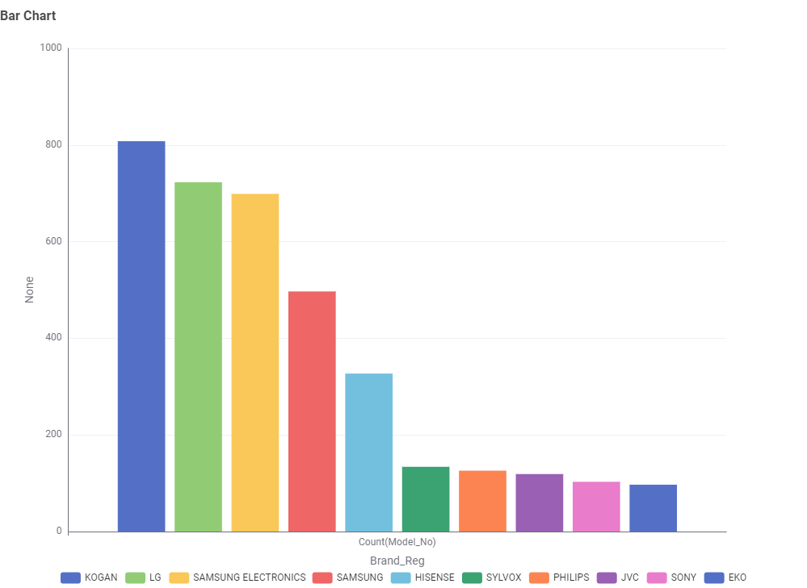
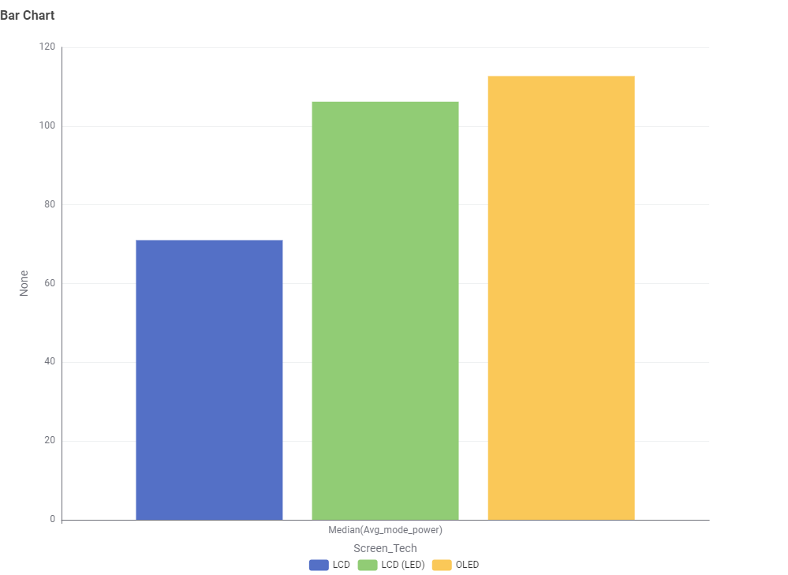
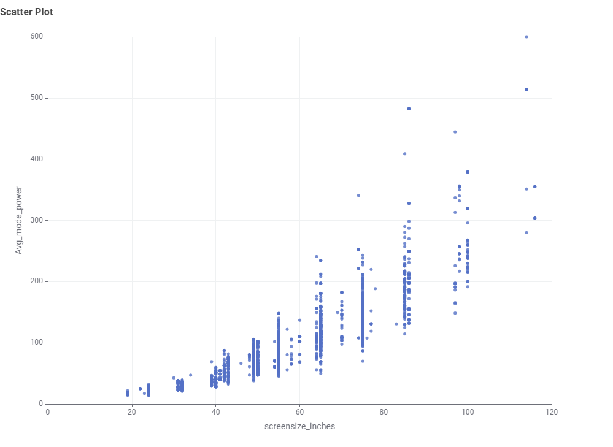
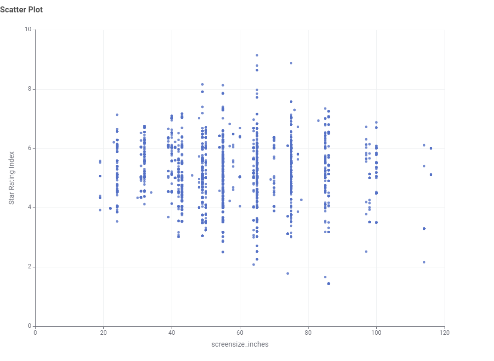
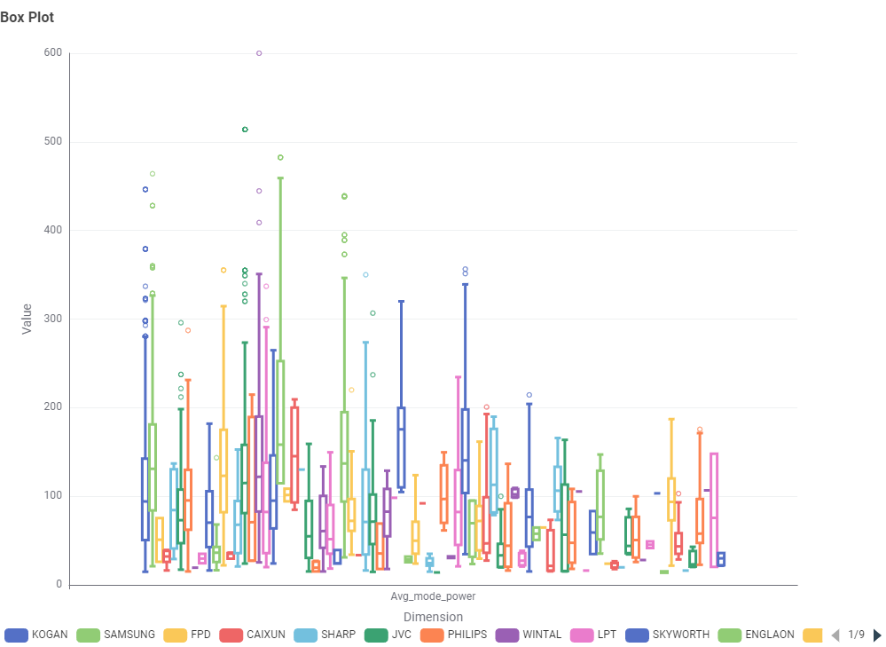
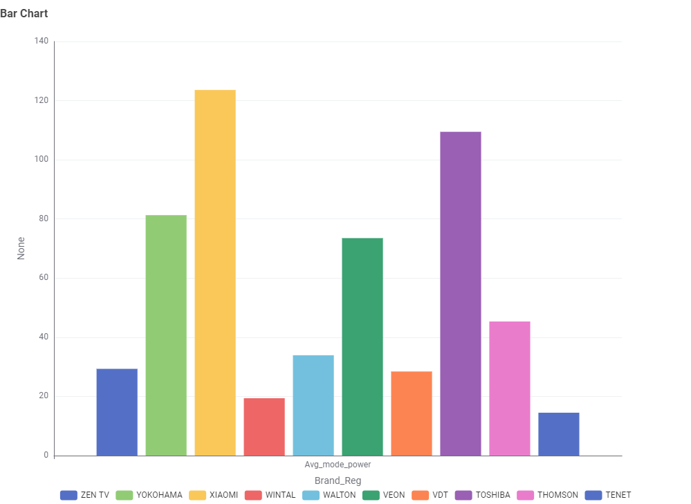

Television Energy Consumption Exploration
Data exploration and visual analysis of the Australian television market based on Greenhouse and Energy Minimum Standards (GEMS) registration data, processed using KNIME Analytics Platform.
What type of TV screen technologies are currently available in Australia and which are the most frequent?
Analysis of registered television models categorised by display technology (LCD, LCD LED, and OLED).


What screen sizes are currently available, and which are the most frequent?
Distribution of television physical display sizes transformed from centimetres to imperial inches.

Which brands have the greatest number of different models?
Top manufacturer registrations showing the count of unique television models listed under the Australian ERL scheme.

Which type of screen technology consumes the least amount of power?
Median active mode power consumption (Watts) across each major screen panel type.

What is the relationship between screen size and power use?
Correlation between panel dimensions (inches) and measured active mode power consumption (Watts).

What is the relationship between star rating and screen size?
Evaluating whether larger physical screens achieve higher or lower Star Rating Indices under GEMS energy standards.

Are there differences in power consumption between brands?
Evaluating power consumption metrics across major retail brands using distribution and average power metrics.

